2000
Na lang twijfelen besloot mijn vader in het jaar 2000 zijn racelicentie te halen samen met een vriend van hem. Hierna zijn ze begonnen met racen bij het DNRT met allebei een identieke Citroën AX uit de AX-cup.
Na lang twijfelen besloot mijn vader in het jaar 2000 zijn racelicentie te halen samen met een vriend van hem. Hierna zijn ze begonnen met racen bij het DNRT met allebei een identieke Citroën AX uit de AX-cup.
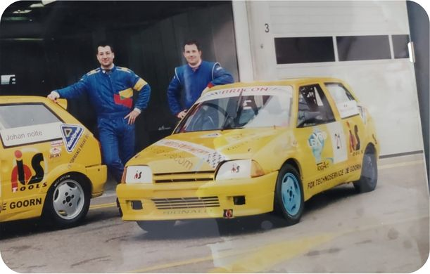
Ik werd zelf al vroeg meegenomen naar het circuit. Ongeveer 3 maanden na mijn geboorte was ik al op het circuit te vinden om te gaan kijken bij mijn vader.
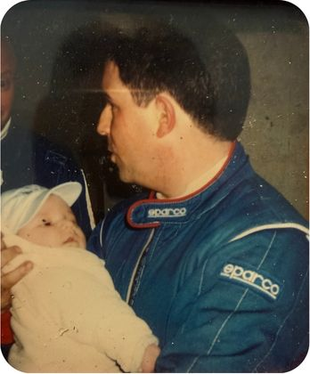
Ondertussen was mijn vader overgestapt op een andere auto. Met deze Citroën Saxo begonnen mijn eerste herrineringen aan de dagen op het circuit.
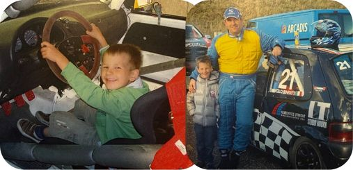
Door de organisatie werd een speciale sponsordag georganiseerd waarbij er mensen mochten meerijden op het circuit. Door deze ervaring is het voor mij echt een doel geworden om dit zelf later ook te gaan doen.
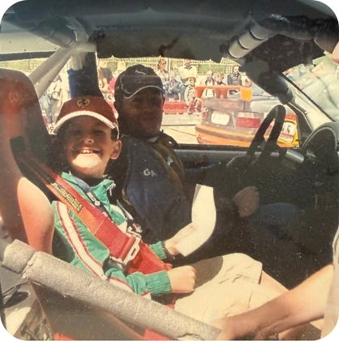
Ook toen ik ouder werd bleef ik elke wedstrijd langskomen op het circuit. Hierbij werd ik ook steeds meer betrokken in het team. De Saxo was ondertussen doorontwikkeld en nog sneller geworden.
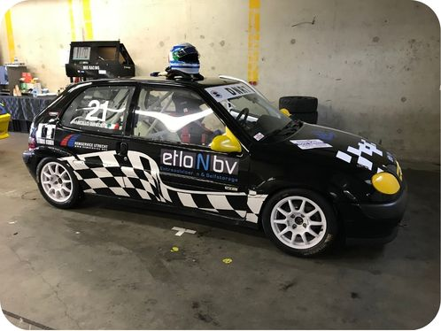
In de tijd van het corona-virus heb ik besloten om te beginnen met serieus sim-racen. Hiervoor heb ik een setup aangeschaft waarmee ik hobbymatig ben gaan racen. Later ben ik op een hoger niveau competities gaan rijden.
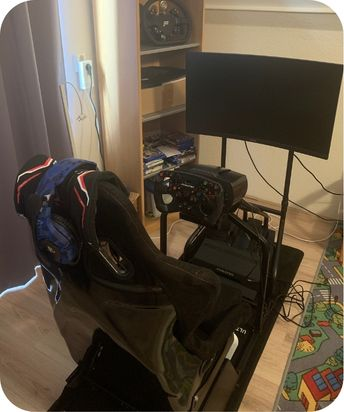
Na de corona periode werden er weer evenementen georganiseerd en mochten we ook weer racen. De auto was nog verder doorontwikkeld en ik begon zelf steeds meer te helpen binnen het team.
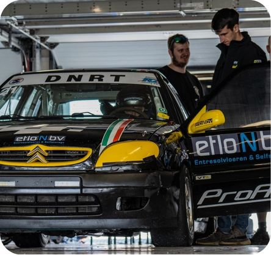
Het sim-racen werd steeds serieuzer en ik merkte dat ik op een hoog niveau mee kon komen. Om deze reden heb ik besloten om te investeren in een professionele setup die gekoppeld is aan een zelf samengestelde PC.
Na vele malen te hebben gekart met vrienden heb ik samen met een teamgenoot twee eigen karts gekocht. Samen rijden wij hiermee endurance wedstrijden door heel Nederland en België met een finale in Spanje.
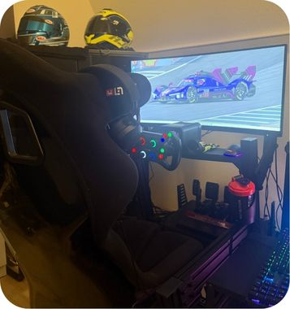
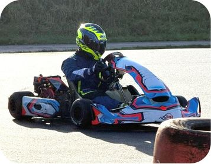
In de loop van de tijd is het raceteam op het circuit ook steeds verder uitgebreid. Om te beginnen met een gloednieuwe, zelf samengestelde motor voor de Saxo. Aangezien de oude motor die hierin zat het begeven had, hebben we besloten een compleet nieuwe motor op te bouwen.
Ook hebben we voor het raceteam een racetrailer aangeschaft waarin we twee auto's en alle spullen die we op het circuit nodig hebben kwijt kunnen. Ook kunnen we hierin met 8 personen slapen tijdens de raceweekenden en er kan gekookt worden in de keuken die hierin zit.
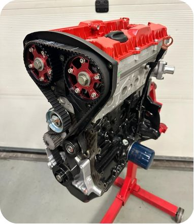
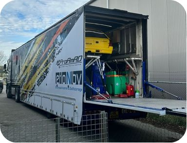